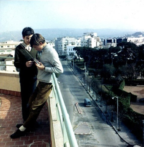

|
|
| Olivier Debroise (1952–2008):
Intractable Foreigner Tarek Elhaik |
|
|  Olivier Debroise with friend, Tanger, 1966
A few years ago, upon a short reconnaissance trip to Mexico City, I recall going with my long time friend Alberto to the Ghandi bookstore off the Quevedo metro station in the Coyoacan district. I had then taken the salutary decision to move my fieldwork site from my native Morocco to search and probe family resemblances at work in another, so-called alternative modernity. Alberto, well aware of my anxiety over dominant geopolitical determinations, my inability to welcome contemporary peripheral nationalisms as viable counter-narratives of modernity, and mixed-feelings towards the aesthetics and erotics, the libidinal economies, of cross-cultural encounters mediated through peripheral national cultures, was determined—not without a sense of affectionate pride and complicity— to update me coute que coute via overwhelming reading suggestions. At that stage of our disciplinary training, still able to maintain a distance from the well-oiled machine of academic anthropology in the United States, a book was simply a curio-site, a prosthetic affective landscape, and a weapon to deflect and temper nativist and culturalist claims one inexorably encounters during fieldwork. I had some money from a small travel grant, so I indulged gluttonously. Among the books I would come across were Olivier Debroise’s. One may dwell on and resist the distinction between the ‘ordinary’ and the ‘exceptional’ but this would be a vain exercise to frame the singular and ungovernable life (alas, painfully too short) of Olivier Debroise: art historian, filmmaker, writer, curator, fellow traveler and foreign body in peripheral cultures of nationalism, and friend who took anthropology’s modernist concept of going native to an extreme form during the three intellectually prolific and intense decades he spent in Mexico, blurring through his innovative curatorial practice the very distinctions of strange and the familiar, native and foreigner, home and faraway places. Olivier belonged to that exceptional lineage of cosmopolitan modernists and avant-gardists—artists, filmmakers, writers and intellectuals whose work he would nonetheless passionately disarticulate—who have crisscrossed the political, affective and aesthetic landscapes of peripheral modernities: Einsenstein in Mexico, Jean Genet in Morocco, Duchamp in Buenos Aires, Maya Deren in Haiti, Miguel Covarrubias in Bali to name only the most prominent ones and the ones with whom he would no doubt feel elective affinities with. Why exceptional, and not ordinary? Because these eventful geographic displacements troubled and intoxicated both sides of the travel, and indeed Olivier’s multi-polar geopolitical and affective crossings do not lend themselves to easy categorization. Not only do they enact a singular blurring of North-South, South-North, North-North, South-South characteristic of the sentimental and aesthetic peripatetic journeys of cosmopolitan modernists and avant-gardists escaping to faraway places to seek something more than mere exotic re-enchantment, Olivier’s crossings (geographically and through his curatorial vision, art historical research and writings as an experimental novelist and filmmaker), can be seen as a patient and passionate weaving of a connective tissue across peripheral modernities and the construction of a curatorial dispositif understood as a counter-narrative to both nationalist and neo-colonial forms of domination. But Olivier’s three decade detour through Mexico (whether that exceptional detour would become permanent is a question I would always pose to him but would always be met with vague answers) exceeds the economy of departure and arrival characteristic of the ethnographer’s vocation of conducting short or long-term fieldwork (whether at home or abroad) with the aim of ultimately carving a reflective space upon removal from one’s site of research. Olivier’s intervention privileged permanent becoming over the geopolitical and academic privilege afforded by ethnographers who rely on reflexivity after the fact: he was always in the midst of things, a unique non-academic ethnographer not unlike the Mexican cosmopolitan modernist, visual artist and amateur anthropologist Miguel Covarrubias he so admired. And although not an ethnographer by training, Olivier can be considered to have mined institutional and official anthropology of post-revolutionary Mexico. As anthropologist Guillermo De la Pena remarks in his perceptive essay ‘Nacionales y Extranjeros en la historia de la antropologia Mexicana’:
A ‘Mexican’ ethnographer of sorts, Olivier was committed to politicizing present-day traces of the constitutive assemblage of Mexican post-revolutionary modernity: the link between Mexican nationalist anthropology, the aesthetics of the historical vanguardia, and the non-academic ethos of contemporary art. Olivier belonged to that generation that saw in contemporary art practice the hope to invent a non-academic form of critique, even if his own academic research was conducted with a great deal of rigor, surgical precision and innovation. Olivier managed to initiate liminal spaces between academic and non-academic forms of interventions. This gesture is particularly visible in his film Un Banquete in Tetlapayac, a film I consider, from the standpoint of mining Mexican nationalist anthropology’s fascination with a ‘deep Mexico, Mexico profundo’, to be the most important film experiment since Ruben Gamez’s irreverent piece ‘La Formula Secreta’ (1965). A Banquet in Tetlapayac (2000) ought perhaps to be approached as nothing less and nothing more than a disarticulation of the connections between avant-garde aesthetics, Mexican nationalism, and what art historian Renato Gonzales-Mello has called “the role of Manuel Gamio’s anthropology as a tool of social engineering.’ The film’s operates a jarring reversal of the naturalized alliance between vanguardista aesthetics and the nationalist-ethnographic imaginary of the 1920s and 30s in Mexico, a signature conceptual gesture in Olivier’s work. My friendship with Olivier coincided with the fact we both spent our teenage years in Morocco (twenty years apart), where we attended the same bourgeois Lycee Descartes, and shared a profound sense of affinity in our engagement with Mexico: Olivier was committed to it, I as an ethnographer passing through, intruding for a couple of years only to return to the safety and ennui of academic life in the United States. Olivier would remind me, time and again, of the sense of familiarity he felt upon arrival to Mexico City in the 1970s, and that, sensuously at least, he would feel at home owing to the years he had spent in the cosmopolitan city of Tangiers. It is with great regret he was unable to fulfill his wish of returning to Tangiers next year where I had scheduled a screening of his film. Tangiers: city of great foreigners and cosmopolitans, where Jean Genet waited to die, Paul Bowles realized his sensuous haven, William Burroughs sought his inter-zone, but in any event all had lived or passed through Tangiers before or after also having spent time in Mexico. Olivier spent a good ten years there, and sadly fell short of returning to it. Mexico and Morocco, two national cultures and messy peripheral modernities, enacted a strange repetition for both Olivier and I. They both irritated and fascinated us. The space in between these two modernities initiated a friendship between us. In the end, I think it was, at least as far as our conversations and friendships are concerned, neither about Mexico nor Morocco. It was about the possibility of creating a future to come, political and affective, through the precious gesture of linking secret geopolitical affinities. This was the enigmatic gift of Olivier: exceptional ethnographer and intractable foreigner meandering through a south-south imaginary that has ceased to be an ideological horizon and has morphed instead into a politicization of silent affinities across peripheral modernities. It is this that makes of Olivier the exceptional intellectual and friend I will dearly miss. |
|